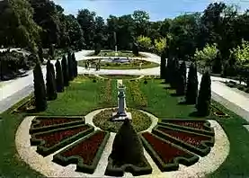

Bukovička banja
Bukovička Banja se nalazi u Aranđelovcu, u podnožju planine Bukulje, na 256 m nadmorske visine, 76 km od Beograda. Do Bukovičke Banje se može doći
magistralnim putem od Beograda preko Mladenovca.
Još 1811. vode Bukovičke Banje koristio je za lečenje Dositej Obradović, a na zahtev knjaza Miloša voda je donošena iz banje i korišćena na dvoru kao
stona voda. U prvoj deceniji 20. veka počinje flaširanje bukovičke kisele vode, danas jedne od najpoznatijih mineralnih voda „Knjaz Miloš“. Danas se
u Specijalnoj bolnici za rehabilitaciju „Bukovička Banja“, na bazi lekovitih mineralnih voda, gline i klime, primenjuju najsavremenije terapeutske
metode.
U Bukovičkoj Banji se leče:
- bolesti gastrointestinalnog trakta
- oboljenja hepatobilijarnog trakta i pankreasa
- bolesti respiratornog sistema
- povrede i oboljenja lokomotornog sistema
U Specijalnoj bolnici radi jedino odeljenje u našoj zemlji za produženo lečenje, edukaciju i rehabilitaciju dece obolele od insulinozavisnog oblika
šećerne bolesti. U rekreacionom bloku, pored standardnih hidroterapijskih procedura, postoji bazen sa đakuzijem i podvodnom masažom, solarijum, sauna,
hidrokinetički tuševi, tuš-masaže sa promenljivim pritiskom i temperaturom, blatne kupke i fitnes kabinet.
Park Bukovičke Banje je jedan od najlepših u našoj zemlji. Uređen na površini od preko 21,5 hektara. Sa geometrijskom strukturom u svojoj osnovi,
pleni skladom i bogatstvom biljnih vrsta. Od 1966. godine, za koju se vezuje početak međunarodnog simpozijuma „Beli venčac“, park Bukovičke Banje
prerasta u jedinstvenu zbirku skulptura. U parku se svake godine održava smotra „Mermer i zvuci“, kao i Međunarodni festival „Svet keramike“. Staro
zdanje, najstariji objekat u parku Bukovičke banje, danas je hotel i simbol Aranđelovca. Počeo je da ga gradi knez Mihajlo Obrenović još 1865. godine,
kao letnju rezidenciju i skupštinski dom.

Pećina Risovača, arheološko nalazište iz starijeg kamenog doba i poseban spomenik prirode, jedno je od najstariji svedočanstava ljudskog postojanja
na Balkanskom poluostrvu. Risovača je uređena za posete turista kao svojevrstan muzej paleolita. Gosti Bukovičke Banje mogu da posete Muzej koji čuva
brojne eksponate iz arheologije, etnologije i likovne umetnosti, odnosno kulture koja se razvijala na prostorima ovog dela Šumadije.
Bukovička Banja pruža izvanredne uslove za sve oblike rekreacije i pripreme sportista, pošto raspolaže sa sportskim halama, terenima za velike i male
sportove, automatskim strelištem, otvorenim bazenom sa mineralnom vodom, zatvorenim bazenom u hotelu „Izvor“. U parku se nalazi trim staza, a od
hotela „Izvora“ vodi obeležena pešačka staza, preko planine Bukulje do Venčaca.
U okolini Bukovičke Banje nalaze se brojni kulturno-istorijski spomenici: „Karađorđev grad“ u Topoli, crkva na Oplencu i Orašac – mesto dogovora o
podizanju Prvog srpskog ustanka 1804. godine. Okolna lovišta su bogata sitnom divljači, a veštačko jezero Garaši pruža mogućnost za ribolov.